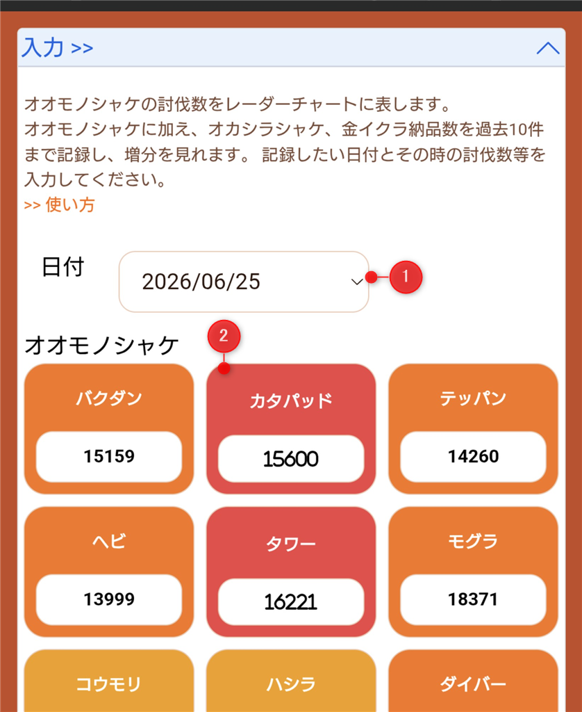
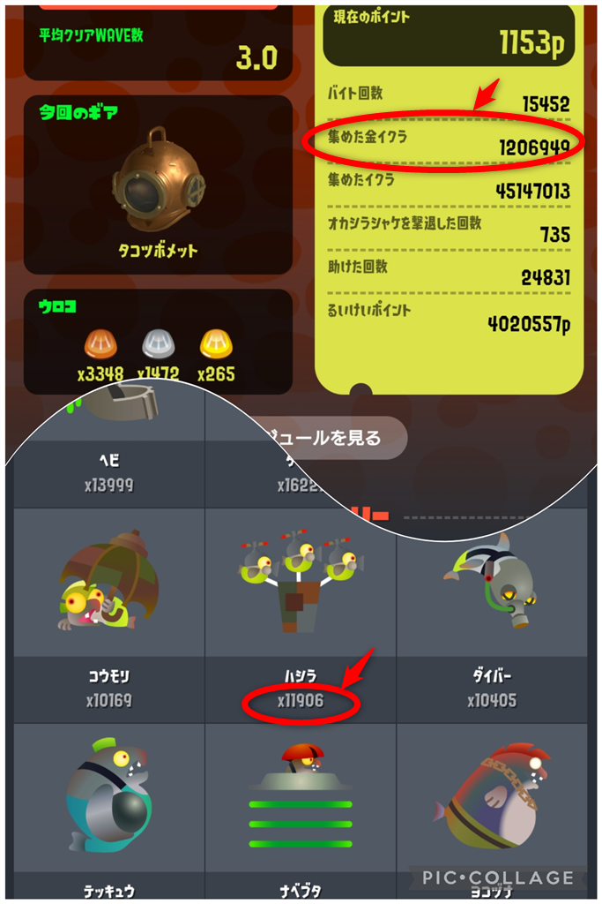
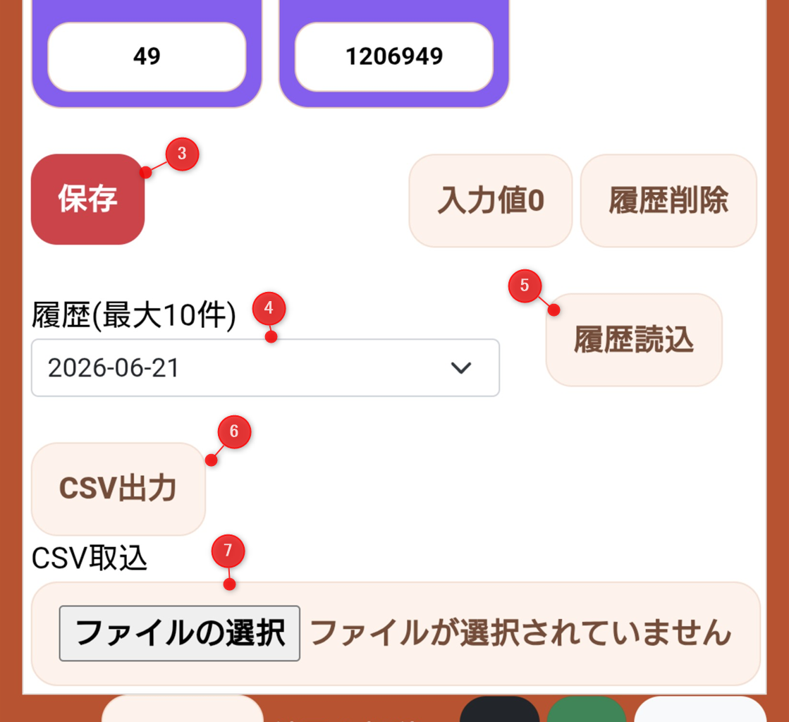
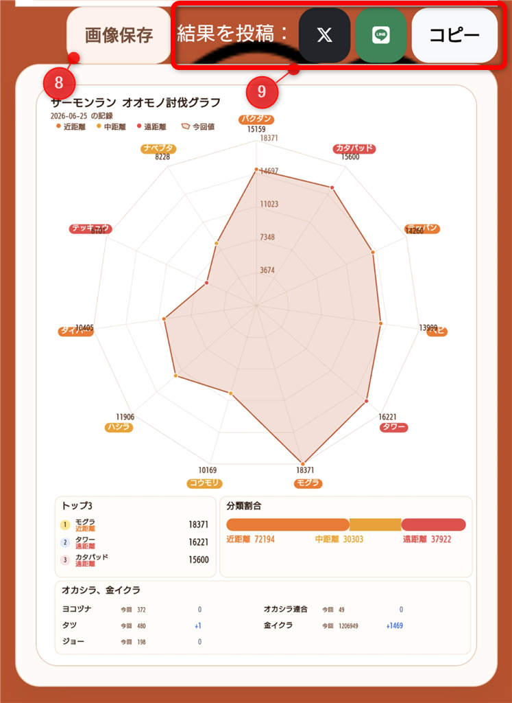
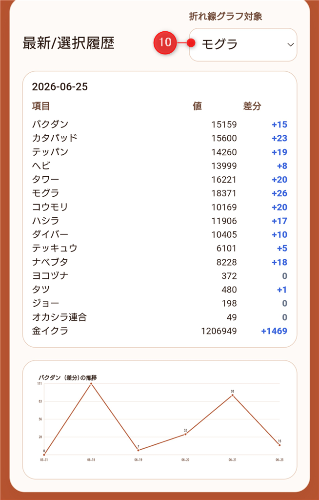

サーモンランのオオモノシャケ討伐数・金イクラ数などを記録し、
履歴として保存・可視化できるツールです。
- 討伐数の入力・保存
- 履歴の確認・比較
- 画像として保存・SNS投稿
- CSVでバックアップ・復元
基本の使い方
【入力画面】


入力画面 / イカリング3参照場所
-
日付：初期は今日の日付が設定されます。過去のデータも入力可能です。
-
入力値：各オオモノ、オカシラを「たおした数」・「集めた金イクラ」の数(累計)を入力します。
【履歴操作】

履歴保存・読込・CSV出力/読込
-
保存：入力値が履歴に記録されます。最大20件で同じ日付のデータは上書き(修正)されます。
-
選択：履歴の日付を選ぶと、その日のデータがグラフに表示されます。
-
履歴読込：履歴読込ボタンで入力欄に反映します。
-
CSV出力：CSVファイルとして保存
-
CSV読込：ツールで出力したCSVファイルを読込・履歴に反映(編集したデータも取込可能)
【結果】


分析結果
-
画像保存：表示中の結果(レーダチャート、TOP3)を画像として保存できます。
-
結果を投稿：TOP3の内容をX/Bluesky/LINEに投稿、またはクリップボードにコピーできます。
-
折れ線グラフ対象選択：選択したオオモノ・オカシラの入力データごとの前回差分値を折れ線グラフに反映(直近10件まで)
CSVについて
CSV出力
- 履歴データをCSV形式でダウンロードできます
- Excelで開いて編集可能です
CSV取り込み
- このツールで出力したCSVを読み込めます
- 同じ日付のデータは上書きされます
CSVの注意点
- 列名を変更すると読み込めません
- CSVはカンマ区切りである必要があります
注意事項
- データはブラウザに保存されます（ローカル保存）
- ブラウザのデータ削除で履歴が消える場合があります
- 重要なデータはCSVでバックアップしてください
×